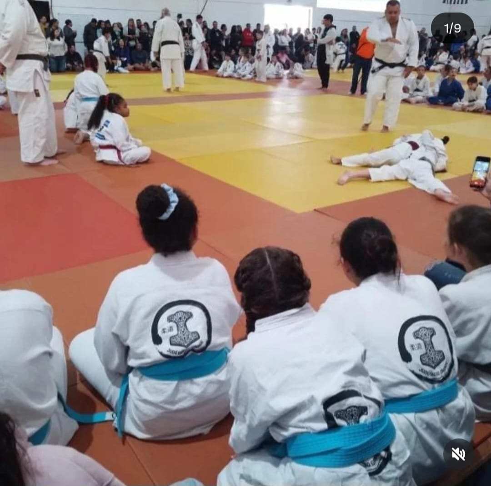
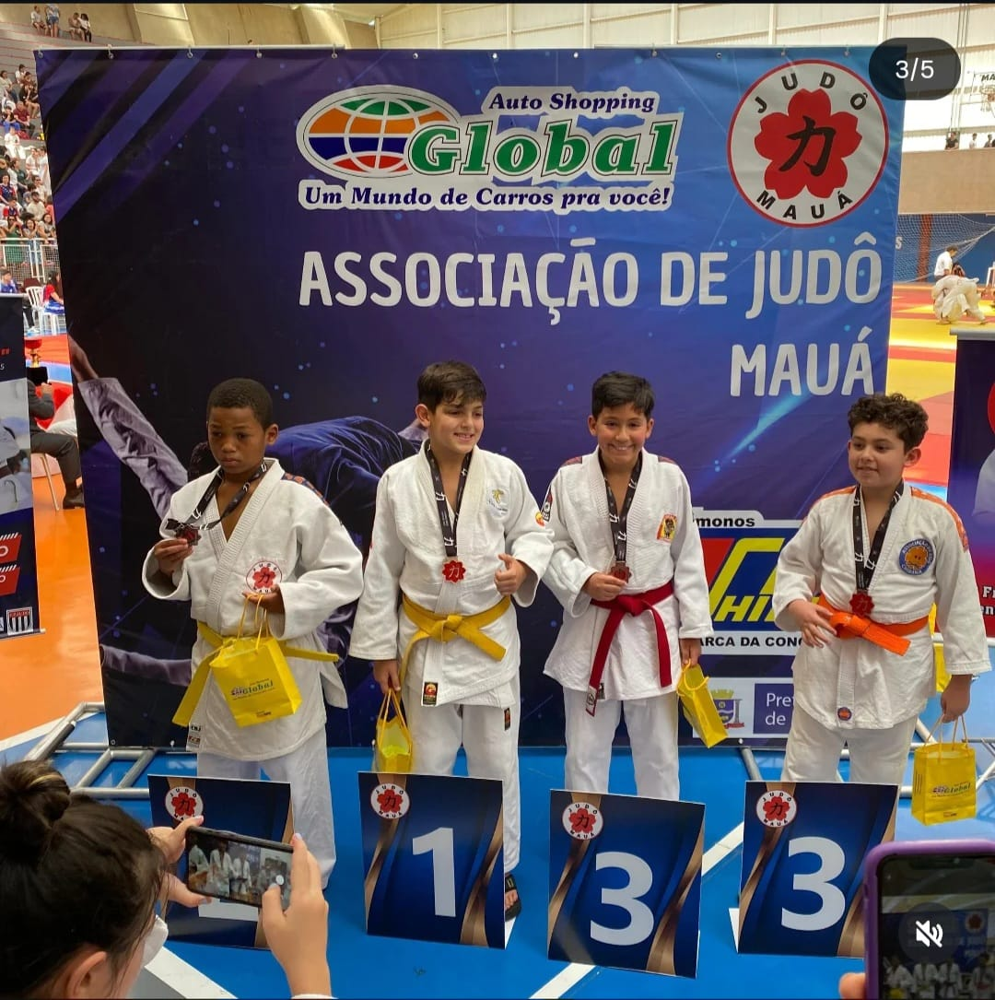
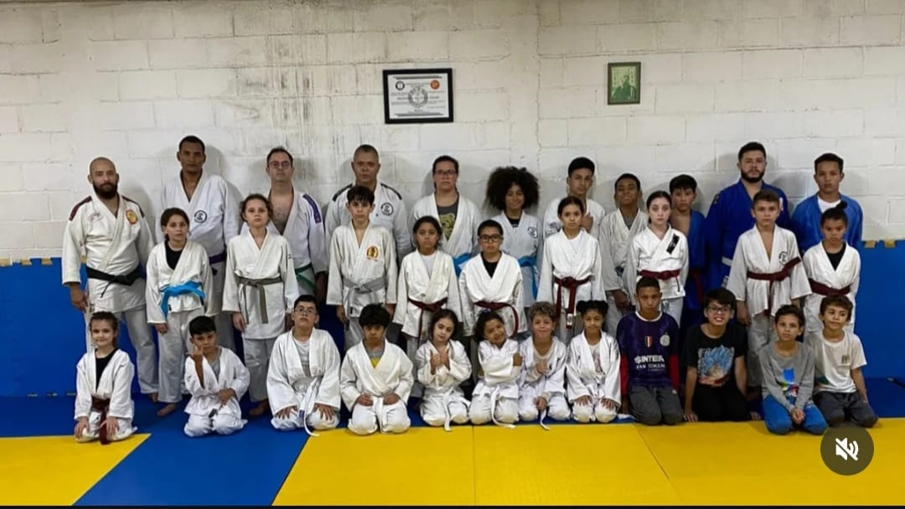
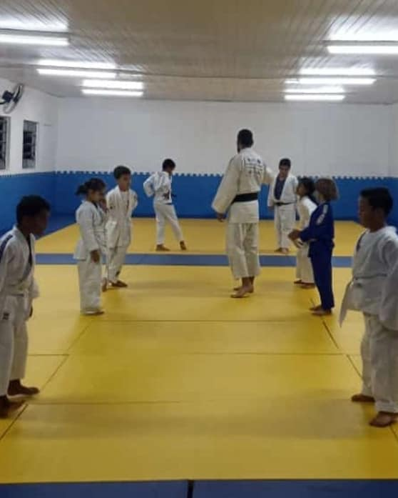
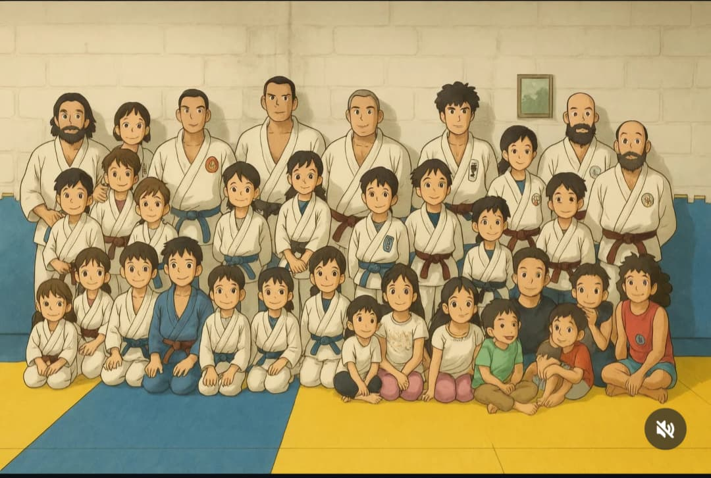

🥋 Judô Riacho Grande 🥋
Disciplina, Respeito e Superação - O Judô que transforma vidas!
Espaço cedido pela Prefeitura • Taxa simbólica para todos
🥋 Sobre a Associação
A Associação de Judô Riacho Grande foi fundada em 1997 com o objetivo de levar o esporte e a cidadania para crianças, jovens e adultos da região. Com o apoio da prefeitura, oferecemos um espaço adequado e professores qualificados para a prática do judô.
Nosso método de ensino une a técnica milenar do judô com valores como disciplina, respeito, autocontrole e superação. Acreditamos que o esporte é uma ferramenta poderosa de transformação social.
Atualmente, atendemos mais de 50 alunos, muitos deles bolsistas integrais, graças à parceria com a comunidade e ao trabalho voluntário dos nossos professores. E agora com Jiu-Jitsu para a criançada e adultos aprender a arte suave!!!
Alunos ativos
Anos de história
Medalhas em competições
📅 Horários dos Treinos
| Turma | Faixa Etária | Dias | Horário |
|---|---|---|---|
| 🥋 Kids 1 | 4 a 6 anos | Terças e Quintas | 08h00 - 09h00 |
| 🥋 Kids 2 | 7 a 10 anos | Segundas e Quartas | 14h00 - 15h30 |
| 🥋 Infantojuvenil | 11 a 14 anos | Terças e Quintas | 15h30 - 17h00 |
| 🥋 Juvenil | 15 a 17 anos | Segundas, Quartas e Sextas | 17h00 - 18h30 |
| 🥋 Adulto | 18 a 40 anos | Segundas e Quartas | 19h00 - 20h30 |
| 🥋 Sênior | Acima de 40 anos | Terças e Quintas | 19h00 - 20h00 |
| 🥋 Treino Livre | Todas as idades | Sábados | 09h00 - 11h00 |
* Horários sujeitos a alteração. Entre em contato para confirmar disponibilidade de vagas.
🎯 Próximos Eventos
📢 Quadro de Avisos
⚠️ ATENÇÃO! ⚠️
No dia 20/05/2026 não haverá treinos devido à manutenção do espaço. As aulas retornam normalmente no dia 21/05.
📢 Matrículas Abertas!
Estamos com vagas abertas para todas as turmas. Taxa simbólica de apenas R$ 40,00 mensais. Venha fazer uma aula experimental gratuita!
🥋 Doação de Quimonos
Estamos recebendo doações de quimonos usados em bom estado para alunos de baixa renda. Entre em contato para saber como ajudar.
📸 Momentos da Nossa Academia

🥋 Treino de quedas

🏆 Campeonato 2025

🧒 Turma Kids em ação

🎓 Novas Faixas

🤝 Treino colaborativo

🎉 Confraternização
📞 Entre em Contato
Localização
RUA SOFÍA D'ANGELO CAPUTO 275
Riacho Grande
São Bernardo do Campo - SP
Horário de Funcionamento
Segunda a Sexta: 08h às 21h
Sábado: 08h às 12h
Domingo: Fechado